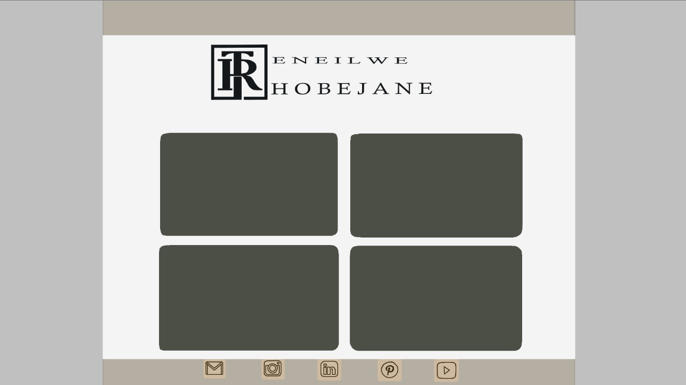

Your Goal And Aesthetic As A Single Statement:
A website offering a chic, elegant, and sophisticated experience that reflects my Interaction Design (IxD) process by combining a polished aesthetic inspired by haute couture fashion culture with seamless, intuitive navigation that offers first-class treatment to companies in the Animation and Interactive Media industry, as well as artists seeking inspiration. It prioritises accessibility, versatility, and thoughtful design. Serves as an immersive journey where high-quality visuals, a strong information hierarchy, are usable across all devices.
The Visual Design Elements Eelected:
Navigation bar (with icons), Footer(with icons), Buttons, Search bar, Images, Animations, a Video, Angular and curved shapes, panels, Colour palette (Neutral shades and dark hues), and lastly will have adequate negative space to give it the clean look.
Colour Theory And Relationships:
As I said, I want a website that mimics the elegance and sophistication of haute-couture. My colour theory will be focused on a chic colour palette similar to a fashion catalogue. I have neutral colours that provide a clean and high-fashion look while the dark hues add contrast, depth and a sense of sophistication to make the visuals in my website stand out. My website will have a balance of curved and angular shapes; this duality ensures that elegance forms curved shapes along with modernity and structure for the angular elements.
Colour Palette:
The #F4F4F4 (Soft White) colour would be good for providing a
background for clean, spacious layouts.
The #B4AEA2 (Muted Taupe) colour would be for UI elements, as in
functioning as an accent color for buttons, headings, or subtle
textures.
The #4B4F46 (Olive Grey) colour would work for secondary elements like
menus or overlays to add richness.
The #14181A (Deep Black) is allocated to the text aspects in website,
it has a strong visual contrast, and luxury appeal.
Fonts
To maintain readability and legibility, I chose fonts that still encapsulate a modern and minimalistic elegance.
composition
My webpages will follow a harmonious and balanced structure that prioritizes clarity and visual order. To establish a clear hierarchy, each section begins with a heading followed by the corresponding body text. This approach ensures that users can easily navigate and understand the content. Every page will consistently feature a navigation bar at the top and a footer at the bottom to maintain structural continuity. Additionally, a prominent header will indicate which specific webpage is being viewed, helping users stay oriented throughout their experience. The overall design emphasizes coherence, usability, and aesthetic balance across all parts of the site.
Sketch Of Possible Designs With Interface Elements
An image I sketched through Krita to map out how my main homepage with look like, with possible logo design along with icons in the footer.
REFERENCES